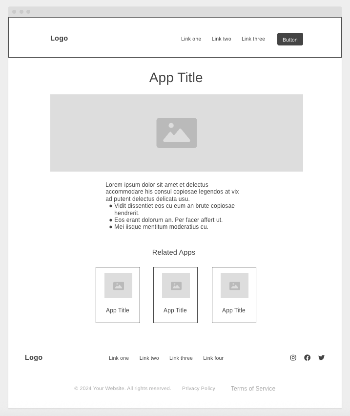

Site Name
Hearmastery.com
Site Purpose
The Ear-Training Helper website provides an interactive platform for musicians and music students to practice and improve their interval recognition skills. The site offers configurable training exercises with both audio and visual cues, including keyboard and staff representations, allowing users to tailor sessions to their skill level and learning preferences.
The Ear-Training Helper website provides an interactive platform for musicians and music students to practice and improve their interval recognition skills. The site offers configurable training exercises with both audio and visual cues, including keyboard and staff representations, allowing users to tailor sessions to their skill level and learning preferences.
Scenarios
- What are the basic intervals in music and how do I recognize them?
- How can I improve my ability to hear and reproduce melodies and harmonies?
Color Schema
Background Palette
Main background
Headings, buttons, links, key icons
Background highlights, cards, hover states
Text Palette
Body text, labels, important readable content
Secondary backgrounds, subtle borders/spacing
Accent Palette
Small accents, hover effects, decorative shapes
Playful accents for buttons, notifications
Typography
Primary Font: Montserrat
- Type: Sans-serif, geometric, modern, professional yet friendly
- Usage:
-
- Headings (H1–H3)
- Buttons / Call-to-Action text
- Purpose: Strong visual presence, clean structure, and a polished feel that supports your brand’s clarity and creativity
Secondary Font: Inter
- Type: Sans-serif, neutral, highly readable
- Usage:
-
- Body text (paragraphs, labels, instructions)
- Subheadings and secondary content
- Purpose: Clear, readable, complements Poppins without competing
Usage Notes
- Maintain hierarchy: headings > subheadings > body > accents
- Limit to 2–3 fonts for consistency
- Use accent font sparingly to enhance creativity without compromising readability
Wireframe
